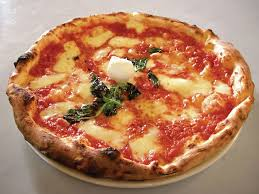

Food is any nutritious substance—typically composed of carbohydrates, fats, proteins, vitamins, and minerals—consumed by living organisms to provide energy, sustain life, promote growth, and repair tissues. It originates from plants, animals, or microorganisms and is essential for metabolic processes.
Pizza
 Pizza is a globally popular dish of Italian origin, consisting of a flattened, leavened wheat-based dough crust, typically topped with seasoned tomato sauce, mozzarella cheese, and various other ingredients like meats and vegetables. It is baked at high temperatures, traditionally in a wood-fired oven.
Pizza is a globally popular dish of Italian origin, consisting of a flattened, leavened wheat-based dough crust, typically topped with seasoned tomato sauce, mozzarella cheese, and various other ingredients like meats and vegetables. It is baked at high temperatures, traditionally in a wood-fired oven.